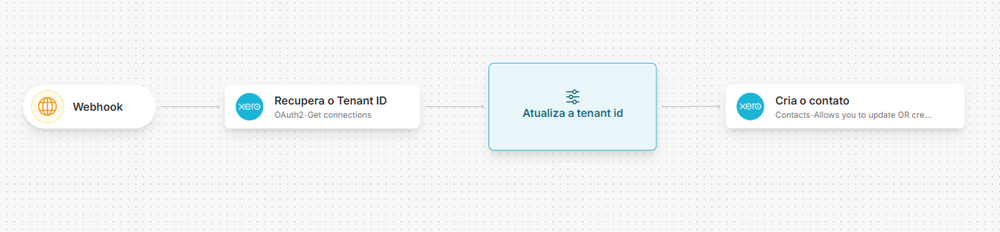

Xero Accounting
Introdução
Este artigo detalha como configurar, autenticar e integrar a API Xero Accounting no Skyone Studio. O conector é um template único com 237 operações sobre https://api.xero.com, cobrindo o ERP contábil da Xero de ponta a ponta — do faturamento à conciliação bancária, dos lançamentos manuais aos relatórios financeiros.
| Bloco | Operações | O que cobre |
|---|---|---|
| Autorização e tenants | 2 | Troca do código de autorização por tokens e listagem das organizações (tenants) autorizadas — a origem do xero-tenant-id |
| Vendas e recebíveis | 84 | Faturas de venda e contas a pagar (Invoices), orçamentos (Quotes), notas de crédito, pagamentos avulsos e em lote, adiantamentos (Prepayments), pagamentos a maior (Overpayments), faturas recorrentes, lembretes e serviços de pagamento |
| Compras e despesas | 31 | Ordens de compra, recibos de despesa e prestações de contas (Expense Claims) |
| Banco | 24 | Transações bancárias (dinheiro recebido e gasto) e transferências entre contas |
| Contatos | 21 | Clientes e fornecedores, grupos de contato e configurações CIS |
| Contabilidade | 44 | Plano de contas, lançamentos manuais, razão (Journals), alíquotas de imposto, categorias de rastreamento, transações vinculadas e orçamentos |
| Relatórios | 11 | Balanço patrimonial, DRE, balancete, resumo bancário, resumo orçamentário, sumário executivo, contas a pagar e a receber por contato e 1099 |
| Organização e configuração | 20 | Dados da organização, usuários, moedas, itens de estoque, temas de marca e carga inicial (Setup) |
O que é a API Xero Accounting?
A Xero é uma plataforma de contabilidade em nuvem voltada a pequenas e médias empresas, forte em Austrália, Nova Zelândia, Reino Unido e Estados Unidos. A Accounting API é a interface principal do produto: RESTful sobre HTTPS, com corpos e respostas em JSON, versão 2.0 sob o prefixo api.xro.
Principais capacidades:
Faturamento: criação e atualização de faturas de venda (ACCREC) e contas a pagar (ACCPAY), envio por e-mail ao contato, geração de PDF e link de fatura online.
Orçamentos: ciclo de vida de Quotes, do rascunho ao aceite, com conversão em fatura.
Recebimentos e pagamentos: pagamentos individuais e em lote, alocação de notas de crédito, adiantamentos e pagamentos a maior contra faturas.
Conciliação bancária: registro de dinheiro recebido e gasto, transferências entre contas bancárias e anexos de comprovante.
Contabilidade: plano de contas completo, lançamentos manuais de partidas dobradas, consulta ao razão (Journals), alíquotas de imposto e categorias de rastreamento (centros de custo).
Compras: ordens de compra com ciclo próprio, recibos de despesa e prestações de contas por usuário.
Relatórios: balanço patrimonial, DRE, balancete e demais relatórios financeiros, com parâmetros de data, período e comparativo.
Anexos e histórico: upload e download de arquivos em quase todo recurso, e registro de notas no histórico de cada documento.
Conceitos fundamentais
xero-tenant-id — a organização é parte de toda chamada
Um token da Xero pode estar autorizado para várias organizações ao mesmo tempo. Por isso, o cabeçalho xero-tenant-id é obrigatório nas 235 operações da Accounting API: ele diz em qual organização a chamada opera. O valor sai de Connections - Retrieves the Xero tenants authorised for the current token, a única operação que não o exige — é ela que lista os tenants disponíveis para o token atual.
POST cria e atualiza; PUT só cria
A Xero inverte a convenção REST usual. Na maioria dos recursos, PUT cria registros novos e falha se já existirem, enquanto POST faz upsert — cria quando não há ...ID no corpo e atualiza quando há. Os nomes das operações no conector preservam essa distinção (Creates one or more… vs Updates or creates one or more…).
Exclusão é mudança de status, não DELETE
Poucos recursos aceitam DELETE de verdade (contas, itens, transações vinculadas, categorias de rastreamento). Para faturas, notas de crédito, orçamentos, transações bancárias e afins, "excluir" é um POST com Status igual a DELETED ou VOIDED. A regra vale inclusive para pagamentos em lote, onde há operações dedicadas de exclusão que, no protocolo, são POST.
where e order — o filtro é uma expressão, não um par chave-valor
Quase toda listagem aceita where com uma expressão booleana sobre os campos do recurso (Status=="ACTIVE" AND Type=="BANK") e order com o campo e a direção (Name ASC). Não são filtros por igualdade simples: strings vão entre aspas, datas usam DateTime(2026,01,15) e o operador de comparação é ==.
Paginação e If-Modified-Since
Listagens grandes usam page (100 registros por página na maioria dos recursos; faturas e notas de crédito aceitam pageSize). Para sincronização incremental, a Xero expõe o cabeçalho If-Modified-Since — que não entrou no conector, por ser opcional; veja Limitações conhecidas.
Anexo é upload binário com o mime no Content-Type
Os anexos da Xero não são multipart/form-data: o corpo é o arquivo cru e o Content-Type carrega o mime type dele. Isso tem consequência direta na modelagem do Studio — veja Convenções deste conector.
Pré-requisitos e configuração na Xero
Para iniciar o desenvolvimento são necessários uma conta ativa na Xero e acesso ao Developer Portal.
O fluxo de autenticação da Xero difere do que o Skyone Studio espera na versão atual: é preciso deixar o Client ID e o Client Secret codificados em Base64 e expostos na configuração da conta conectada, ou seja, visíveis para quem tiver acesso ao conector. Se isso for um problema no seu contexto, não use este template.
Obtendo uma URL de callback
O fluxo de Custom Connection é mais simples e dispensa o callback, mas exige um plano específico na Xero e não foi testado neste template.
No Skyone Studio, acesse API Gateway e crie um gateway e uma rota sem autenticação:

Você vê a URL completa gerada criando um fluxo e adicionando um gatilho de gateway.
Obtendo as credenciais
- Na seção de apps conectados do Developer Portal, clique em New app e selecione Web app.
- Escolha um nome, informe qualquer URL em Company URL e a URL de callback criada acima em Redirect URI.
- Abra o app, vá em Configurações e guarde Client ID e Client Secret.

- Codifique o par em Base64 e guarde o resultado:
echo -n "client_id:client_secret" | base64 # bash/zsh/sh
[Convert]::ToBase64String([Text.Encoding]::UTF8.GetBytes("client_id:client_secret")) # powershell
python3 -c "import base64; print(base64.b64encode(b'client_id:client_secret').decode())" # qualquer shell com python
Substitua
client_id:client_secretpelas suas credenciais reais, exatamente nesse formato.
- Escolha os escopos de que a integração precisa. Para este conector, o conjunto usual é
openid profile email accounting.transactions accounting.contacts accounting.settings accounting.reports.read accounting.journals.read accounting.attachments accounting.budgets.read offline_access. offline_accessé obrigatório — sem ele a Xero não emiterefresh_tokene o access token expira em 30 minutos sem renovação.- Uma organização de demonstração (Demo Company) está disponível em qualquer conta Xero e é o ambiente indicado para testar o conector.
Autenticação
Tipo: OAuth 2.0
A Xero usa exclusivamente OAuth 2.0 com authorization_code. O access token vale 30 minutos; o refresh token vale 60 dias e é rotativo — cada renovação devolve um refresh token novo e invalida o anterior. Nenhuma operação da Accounting API declara parâmetro de token: o cabeçalho Authorization: Bearer <access_token> é montado pela conta conectada. A exceção é OAuth2 - Exchanges the authorization code for an access token, que existe justamente para a troca inicial e por isso usa full-url e autenticação Basic própria.
Configuração da conta conectada:
| Variável | Valor |
|---|---|
| Host | https://api.xero.com |
| Porta | 443 |
| Client ID | {{client_id}} |
| Client Secret | {{client_secret}} |
| Access Token | {{access_token}} |
| Refresh Token | {{refresh_token}} |
| Endpoint de troca de token | https://identity.xero.com/connect/token |
- URL de autorização:
https://login.xero.com/identity/connect/authorize - Parâmetros no cabeçalho da requisição após autenticação:
Bearer <>token</> - O Studio não tem rota de callback nativa: para obter o primeiro par de tokens, siga o tutorial de OAuth2 com callback deste repositório, usando a operação OAuth2 - Exchanges the authorization code for an access token.
- Depois de autenticar, chame Connections - Retrieves the Xero tenants authorised for the current token para descobrir o
tenantIdde cada organização e guarde-o: ele alimenta o parâmetroxero_tenant_idde todas as demais operações.
Passo a passo da conta conectada
- No conector dentro do Skyone Studio, clique em Conta conectada e em Adicionar conta conectada.
- Preencha os valores da tabela acima e salve.

- Crie ou use um fluxo em Integrações com gatilho de API Gateway, apontando para o mesmo gateway e rota cadastrados como Redirect URI na Xero, e declare um parâmetro de query chamado code.

- Insira um módulo deste conector com a operação OAuth2 - Exchanges the authorization code for an access token, ligue-o ao gatilho e monte o
form_bodycom ocoderecebido e o mesmoredirect_uricadastrado na Xero. Emcredenciais_codificadas, use o Base64 gerado nos pré-requisitos. - Acesse a URL de autorização da Xero e faça login:
https://login.xero.com/identity/connect/authorize?response_type=code&client_id={client_id}&redirect_uri={redirect_uri}&scope={scopes}
- Depois de autenticar, volte ao fluxo e abra os logs: o módulo da troca de token mostra o access_token e o refresh_token.
- Edite a conta conectada para incluir os dois tokens e ajuste Parâmetros no cabeçalho da requisição após autenticação para:
Bearer <>token</>
- Salve as alterações.
Apague o fluxo depois de concluir, para não deixar os tokens expostos nos logs.
O Host termina no domínio da API, sem o prefixo
api.xro/2.0. A versão é explícita no caminho de cada operação — é o que mantémapi.xro/2.0/...visível na operação e deixa o Host livre para as rotas fora da Accounting API, como/connections.
Convenções deste conector
- A versão fica no caminho, não em um parâmetro. Toda operação da Accounting API começa com os segmentos literais
api.xroe2.0. A Xero mantém uma única versão viva da Accounting API — a1.0era do OAuth 1.0a e foi desligada —, então um parâmetro de versão não teria valor concorrente para escolher. Deixá-la explícita no caminho, e não embutida no Host, é o que permite a mesma conta conectada chamar/connections, que vive fora do prefixo versionado. - Corpo JSON é um parâmetro de texto único. As 77 operações de escrita com corpo declaram um parâmetro
body(object), com um JSON de exemplo derivado do schema oficial no sample. Os campos não são parametrizados individualmente: os corpos da Xero chegam a quatro níveis de aninhamento (Overpayment[Contact][Balances][AccountsReceivable][Outstanding]) e nomes achatados desse tamanho estouram o limite de 50 caracteres do Studio. - Upload de anexo é binário e exige base64. As 22 operações de anexo (
POST/PUTem.../Attachments/{FileName}) enviam o arquivo cru com o mime no cabeçalhoContent-Type, não emmultipart/form-data. Informe o conteúdo em base64 no parâmetrofile_content, ajustecontent_typepara o mime real do arquivo e marque "Forçar bufferização da requisição" na operação — sem isso o corpo chega corrompido. xero-tenant-idé parâmetro obrigatório em 235 operações. Só Connections e OAuth2 não o exigem, justamente por serem anteriores à escolha da organização.- Idempotência declarada onde a Xero a suporta.
Idempotency-Keyé parâmetro opcional nas 99 operações de escrita em que a especificação oficial o declara. Use um UUID novo por tentativa lógica e o mesmo UUID ao repetir por timeout ou erro de rede. A chave vale por 24 horas. - Path e query são exaustivos. Todos os parâmetros de caminho e de query de cada endpoint estão declarados, obrigatórios e opcionais, cada um com descrição e sample preenchidos. Parâmetro de query vazio é descartado pelo Studio, então deixar um filtro em branco não altera a chamada.
- Todo parâmetro tem sample. Os valores vêm do
enumou doexampleda especificação oficial quando existem; nos demais casos são valores fictícios plausíveis no formato que o campo espera — GUIDs zerados nos identificadores. Nenhum é credencial real. - Nomes de operação vêm do
summaryoficial. O padrão é{Domínio} - {Ação}, com a ação em inglês, como a especificação da Xero a descreve. Doze nomes foram encurtados para caber no limite de 100 caracteres do Studio, preservando o sentido.
Limitações conhecidas
If-Modified-Sinceficou fora. O cabeçalho de sincronização incremental é opcional em 18 operações de listagem e, no Studio, header opcional em branco é enviado com valor vazio — o que a Xero rejeita. Se a sua integração precisar de sincronização por data de modificação, acrescente o cabeçalho na operação.- Um único parâmetro de corpo por operação de escrita. Os campos do JSON não são parametrizados individualmente; a descrição e o sample de cada operação mostram a estrutura esperada, e o conjunto completo de campos está na documentação oficial do endpoint.
- Operações que devolvem PDF ou arquivo. As quatro rotas
.../pdf(faturas, notas de crédito, ordens de compra e orçamentos) e os downloads de anexo devolvem binário, não JSON — trate a resposta como arquivo no fluxo. - Limites de taxa da Xero. 60 chamadas por minuto e 5.000 por dia por tenant, mais 10.000 por minuto por app em todos os tenants. Estouros devolvem
429com o cabeçalhoRetry-After. - Escopo limitado à Accounting API. Payroll, Files, Assets, Projects, Bank Feeds e Finance são APIs separadas da Xero, sob outros prefixos (
payroll.xro,files.xro,assets.xro,projects.xro). Nenhuma delas está neste conector. - Webhooks não são operações. As notificações de mudança em faturas e contatos são configuradas no Developer Portal, não por endpoint — logo, não há operação para isso no conector.
Operações Disponíveis
As 237 operações estão agrupadas nos oito blocos da tabela da Introdução.
Autorização e tenants — 2 operações
| Nome da Operação | Método | Descrição da Função |
|---|---|---|
| Connections - Retrieves the Xero tenants authorised for the current token | GET | Lista as organizações Xero autorizadas para o token atual; é a origem do xero-tenant-id exigido por todas as demais operações. |
| OAuth2 - Exchanges the authorization code for an access token | POST | Troca o código de autorização pelo access token e pelo refresh token na identidade da Xero. |
Vendas e recebíveis — 84 operações
| Nome da Operação | Método | Descrição da Função |
|---|---|---|
| Batch Payments - Creates a history record for a specific batch payment | PUT | Cria um registro de histórico para um pagamento em lote específico |
| Batch Payments - Creates one or many batch payments for invoices | PUT | Cria um ou mais pagamentos em lote para faturas. |
| Batch Payments - Deletes a batch payment identified in the request body | POST | Exclui um pagamento em lote identificado no corpo da solicitação. |
| Batch Payments - Deletes a specific batch payment using a unique batch payment Id | POST | Exclui um pagamento em lote específico usando um ID de pagamento em lote exclusivo. |
| Batch Payments - Retrieves a specific batch payment using a unique batch payment Id | GET | Recupera um pagamento em lote específico usando um ID de pagamento em lote exclusivo. |
| Batch Payments - Retrieves either one or many batch payments for invoices | GET | Recupera um ou mais pagamentos em lote para faturas. |
| Batch Payments - Retrieves history from a specific batch payment | GET | Recupera o histórico de um pagamento em lote específico. |
| Credit Notes - Creates a history record for a specific credit note | PUT | Cria um registro histórico para uma nota de crédito específica. |
| Credit Notes - Creates a new credit note | PUT | Cria uma nova nota de crédito |
| Credit Notes - Creates allocation for a specific credit note | PUT | Cria alocação para uma nota de crédito específica |
| Credit Notes - Creates an attachment for a specific credit note | PUT | Cria um anexo para uma nota de crédito específica |
| Credit Notes - Deletes an Allocation from a Credit Note | DELETE | Exclui uma alocação de uma nota de crédito |
| Credit Notes - Retrieves a specific attachment on a specific credit note by file name | GET | Recupera um anexo específico em uma nota de crédito específica por nome de arquivo |
| Credit Notes - Retrieves a specific attachment using a unique attachment Id | GET | Recupera um anexo específico de uma nota de crédito específica usando um Id único de anexo |
| Credit Notes - Retrieves a specific credit note using a unique credit note Id | GET | Recupera uma nota de crédito específica usando um Id único de nota de crédito |
| Credit Notes - Retrieves any credit notes | GET | Recupera todas as notas de crédito |
| Credit Notes - Retrieves attachments for a specific credit notes | GET | Recupera anexos para notas de crédito específicas |
| Credit Notes - Retrieves credit notes as PDF files | GET | Recupera notas de crédito em arquivos PDF. |
| Credit Notes - Retrieves history records of a specific credit note | GET | Recupera os registros históricos de uma nota de crédito específica. |
| Credit Notes - Updates a specific credit note | POST | Atualiza uma nota de crédito específica |
| Credit Notes - Updates attachments on a specific credit note by file name | POST | Atualiza anexos em uma nota de crédito específica por nome de arquivo |
| Credit Notes - Updates or creates one or more credit notes | POST | Atualiza ou cria uma ou mais notas de crédito |
| Invoice Reminders - Retrieves invoice reminder settings | GET | Recupera as configurações de lembrete de fatura. |
| Invoices - Creates a history record for a specific invoice | PUT | Cria um registro histórico para uma fatura específica. |
| Invoices - Creates an attachment for a specific invoice or purchase bill by filename | PUT | Cria um anexo para uma fatura ou conta a pagar específica por nome de arquivo. |
| Invoices - Creates one or more sales invoices or purchase bills | PUT | Cria uma ou mais faturas de vendas ou contas a pagar. |
| Invoices - Retrieves a URL to an online invoice | GET | Recupera uma URL para uma fatura online. |
| Invoices - Retrieves a specific attachment using a unique attachment Id | GET | Recupera um anexo específico de uma fatura ou conta a pagar específica usando um ID de anexo único. |
| Invoices - Retrieves a specific sales invoice or purchase bill using a unique invoice Id | GET | Recupera uma fatura de vendas ou conta a pagar específica usando um ID de fatura único. |
| Invoices - Retrieves an attachment from a specific invoice or purchase bill by filename | GET | Recupera um anexo de uma fatura ou conta a pagar específica por nome de arquivo. |
| Invoices - Retrieves attachments for a specific invoice or purchase bill | GET | Recupera anexos de uma fatura ou conta a pagar específica. |
| Invoices - Retrieves history records for a specific invoice | GET | Recupera os registros históricos de uma fatura específica. |
| Invoices - Retrieves invoices or purchase bills as PDF files | GET | Recupera faturas ou contas a pagar em arquivos PDF. |
| Invoices - Retrieves sales invoices or purchase bills | GET | Recupera faturas de vendas ou contas a pagar. |
| Invoices - Sends a copy of a specific invoice to related contact via email | POST | Envia uma cópia de uma fatura específica para o contato relacionado por e-mail. |
| Invoices - Updates a specific sales invoices or purchase bills | POST | Atualiza uma fatura de vendas ou conta a pagar específica. |
| Invoices - Updates an attachment from a specific invoices or purchase bill by filename | POST | Atualiza um anexo de uma fatura ou conta a pagar específica por nome de arquivo. |
| Invoices - Updates or creates one or more sales invoices or purchase bills | POST | Atualiza ou cria uma ou mais faturas de vendas ou contas a pagar. |
| Overpayments - Creates a history record for a specific overpayment | PUT | Cria um registro de histórico para um pagamento em excesso específico. |
| Overpayments - Creates a single allocation for a specific overpayment | PUT | Cria uma alocação única para um pagamento em excesso específico. |
| Overpayments - Deletes an Allocation from an overpayment | DELETE | Deleta uma alocação de um pagamento em excesso. |
| Overpayments - Retrieves a specific overpayment using a unique overpayment Id | GET | Recupera um pagamento em excesso específico usando um Id de pagamento em excesso único. |
| Overpayments - Retrieves history records of a specific overpayment | GET | Recupera registros de histórico de um pagamento em excesso específico. |
| Overpayments - Retrieves overpayments | GET | Recupera pagamentos em excesso. |
| Payment Services - Creates a payment service | PUT | Cria um serviço de pagamento. |
| Payment Services - Retrieves payment services | GET | Recupera serviços de pagamento. |
| Payments - Creates a history record for a specific payment | PUT | Cria um registro de histórico para um pagamento específico. |
| Payments - Creates a single payment for invoice or credit notes | POST | Cria um pagamento único para faturas ou notas de crédito. |
| Payments - Creates multiple payments for invoices or credit notes | PUT | Cria múltiplos pagamentos para faturas ou notas de crédito. |
| Payments - Retrieves a specific payment for invoices and credit notes using a unique payment Id | GET | Recupera um pagamento específico para faturas e notas de crédito usando um Id de pagamento único. |
| Payments - Retrieves history records of a specific payment | GET | Recupera registros de histórico de um pagamento específico. |
| Payments - Retrieves payments for invoices and credit notes | GET | Recupera pagamentos para faturas e notas de crédito. |
| Payments - Updates a specific payment for invoices and credit notes | POST | Atualiza um pagamento específico para faturas e notas de crédito. |
| Prepayments - Allows you to create an Allocation for prepayments | PUT | Permite criar uma alocação para pré-pagamentos. |
| Prepayments - Allows you to retrieve a specified prepayments | GET | Permite recuperar pré-pagamentos especificados. |
| Prepayments - Creates a history record for a specific prepayment | PUT | Cria um registro de histórico para um pré-pagamento específico. |
| Prepayments - Deletes an Allocation from a Prepayment | DELETE | Deleta uma alocação de um pré-pagamento. |
| Prepayments - Retrieves history record for a specific prepayment | GET | Recupera registro de histórico de um pré-pagamento específico. |
| Prepayments - Retrieves prepayments | GET | Recupera pré-pagamentos. |
| Quotes - Create one or more quotes | PUT | Cria um ou mais orçamentos |
| Quotes - Creates a history record for a specific quote | PUT | Cria um registro de histórico para um orçamento específico |
| Quotes - Creates attachment for a specific quote | PUT | Cria um anexo para um orçamento específico |
| Quotes - Retrieves a specific attachment from a specific quote by filename | GET | Recupera um anexo específico de um orçamento por nome de arquivo |
| Quotes - Retrieves a specific attachment from a specific quote using a unique attachment Id | GET | Recupera um anexo específico de um orçamento usando um ID único |
| Quotes - Retrieves a specific quote as a PDF file using a unique quote Id | GET | Recupera um orçamento específico como arquivo PDF usando um ID único |
| Quotes - Retrieves a specific quote using a unique quote Id | GET | Recupera um orçamento específico usando um ID único |
| Quotes - Retrieves attachments for a specific quote | GET | Recupera anexos de um orçamento específico |
| Quotes - Retrieves history records of a specific quote | GET | Recupera registros de histórico de um orçamento específico |
| Quotes - Retrieves sales quotes | GET | Recupera orçamentos de vendas |
| Quotes - Updates a specific attachment from a specific quote by filename | POST | Atualiza um anexo específico de um orçamento por nome de arquivo |
| Quotes - Updates a specific quote | POST | Atualiza um orçamento específico |
| Quotes - Updates or creates one or more quotes | POST | Atualiza ou cria um ou mais orçamentos |
| Repeating Invoices - Creates a history record for a specific repeating invoice | PUT | Cria um registro histórico de uma fatura recorrente específica |
| Repeating Invoices - Creates an attachment from a specific repeating invoices by file name | PUT | Cria um anexo de uma fatura recorrente específica pelo nome do arquivo |
| Repeating Invoices - Creates one or more repeating invoice templates | PUT | Cria um ou mais modelos de fatura recorrente |
| Repeating Invoices - Creates or deletes one or more repeating invoice templates | POST | Cria ou exclui um ou mais modelos de fatura recorrente |
| Repeating Invoices - Deletes a specific repeating invoice template | POST | Exclui um modelo de fatura recorrente específico |
| Repeating Invoices - Retrieves a specific attachment from a specific repeating invoice | GET | Recupera um anexo específico de uma fatura recorrente específica |
| Repeating Invoices - Retrieves a specific attachment from a specific repeating invoices by file name | GET | Recupera um anexo específico de uma fatura recorrente específica pelo nome do arquivo |
| Repeating Invoices - Retrieves a specific repeating invoice by using a unique repeating invoice Id | GET | Recupera uma fatura recorrente específica usando um ID de fatura recorrente único |
| Repeating Invoices - Retrieves attachments from a specific repeating invoice | GET | Recupera anexos de uma fatura recorrente específica |
| Repeating Invoices - Retrieves history record for a specific repeating invoice | GET | Recupera o registro histórico de uma fatura recorrente específica |
| Repeating Invoices - Retrieves repeating invoices | GET | Recupera faturas recorrentes |
| Repeating Invoices - Updates a specific attachment from a specific repeating invoices by file name | POST | Atualiza um anexo específico de uma fatura recorrente específica pelo nome do arquivo |
Contatos — 21 operações
| Nome da Operação | Método | Descrição da Função |
|---|---|---|
| Contact Groups - Creates a contact group | PUT | Cria um grupo de contatos |
| Contact Groups - Creates contacts to a specific contact group | PUT | Cria contatos para um grupo de contatos específico |
| Contact Groups - Deletes a specific contact from a contact group using a unique contact Id | DELETE | Exclui um contato específico de um grupo de contatos usando um Id único de contato |
| Contact Groups - Deletes all contacts from a specific contact group | DELETE | Exclui todos os contatos de um grupo de contatos específico |
| Contact Groups - Retrieves a specific contact group by using a unique contact group Id | GET | Recupera um grupo de contatos específico usando um Id único de grupo de contatos |
| Contact Groups - Retrieves the contact Id and name of each contact group | GET | Recupera o Id do contato e o nome de cada grupo de contatos |
| Contact Groups - Updates a specific contact group | POST | Atualiza um grupo de contatos específico |
| Contacts - Create contact attachment by file name | PUT | Cria anexo de contato por nome de arquivo |
| Contacts - Creates a new history record for a specific contact | PUT | Cria um novo registro de histórico para um contato específico |
| Contacts - Creates multiple contacts (bulk) in a Xero organisation | PUT | Cria múltiplos contatos (em lote) em uma organização Xero |
| Contacts - Retrieves CIS settings for a specific contact in a Xero organisation | GET | Recupera configurações CIS para um contato específico em uma organização Xero |
| Contacts - Retrieves a specific attachment from a specific contact by file name | GET | Recupera um anexo específico de um contato específico por nome de arquivo |
| Contacts - Retrieves a specific attachment from a specific contact using a unique attachment Id | GET | Recupera um anexo específico de um contato específico usando um Id único de anexo |
| Contacts - Retrieves a specific contact by contact number in a Xero organisation | GET | Recupera um contato específico por número de contato em uma organização Xero |
| Contacts - Retrieves a specific contacts in a Xero organisation using a unique contact Id | GET | Recupera um contato específico em uma organização Xero usando um Id único de contato |
| Contacts - Retrieves all contacts in a Xero organisation | GET | Recupera todos os contatos em uma organização Xero |
| Contacts - Retrieves attachments for a specific contact in a Xero organisation | GET | Recupera anexos para um contato específico em uma organização Xero |
| Contacts - Retrieves history records for a specific contact | GET | Recupera registros de histórico para um contato específico |
| Contacts - Update contact attachment by file name | POST | Atualiza anexo de contato por nome de arquivo |
| Contacts - Updates a specific contact in a Xero organisation | POST | Atualiza um contato específico em uma organização Xero |
| Contacts - Updates or creates one or more contacts in a Xero organisation | POST | Atualiza ou cria um ou mais contatos em uma organização Xero |
Compras e despesas — 31 operações
| Nome da Operação | Método | Descrição da Função |
|---|---|---|
| Expense Claims - Creates a history record for a specific expense claim | PUT | Cria um registro histórico para uma reivindicação de despesa específica. |
| Expense Claims - Creates expense claims | PUT | Cria reivindicações de despesas. |
| Expense Claims - Retrieves a specific expense claim using a unique expense claim Id | GET | Recupera uma reivindicação de despesa específica usando um ID de reivindicação de despesa único. |
| Expense Claims - Retrieves expense claims | GET | Recupera reivindicações de despesas. |
| Expense Claims - Retrieves history records of a specific expense claim | GET | Recupera os registros históricos de uma reivindicação de despesa específica. |
| Expense Claims - Updates a specific expense claims | POST | Atualiza uma reivindicação de despesa específica. |
| Purchase Orders - Creates a history record for a specific purchase orders | PUT | Cria um registro de histórico para pedidos de compra específicos |
| Purchase Orders - Creates attachment for a specific purchase order | PUT | Cria um anexo para um pedido de compra específico |
| Purchase Orders - Creates one or more purchase orders | PUT | Cria um ou mais pedidos de compra |
| Purchase Orders - Retrieves a specific attachment for a specific purchase order by filename | GET | Recupera um anexo específico de um pedido de compra por nome de arquivo |
| Purchase Orders - Retrieves a specific attachment using a unique attachment Id | GET | Recupera um anexo específico de um pedido de compra usando um ID único |
| Purchase Orders - Retrieves a specific purchase order using a unique purchase order Id | GET | Recupera um pedido de compra específico usando um ID único de pedido |
| Purchase Orders - Retrieves a specific purchase order using purchase order number | GET | Recupera um pedido de compra específico usando seu número |
| Purchase Orders - Retrieves attachments for a specific purchase order | GET | Recupera anexos de um pedido de compra específico |
| Purchase Orders - Retrieves history for a specific purchase order | GET | Recupera o histórico de um pedido de compra específico |
| Purchase Orders - Retrieves purchase orders | GET | Recupera pedidos de compra. |
| Purchase Orders - Retrieves specific purchase order as PDF files using a unique purchase order Id | GET | Recupera um pedido de compra específico como arquivo PDF usando um ID único |
| Purchase Orders - Updates a specific attachment for a specific purchase order by filename | POST | Atualiza um anexo específico de um pedido de compra por nome de arquivo |
| Purchase Orders - Updates a specific purchase order | POST | Atualiza um pedido de compra específico |
| Purchase Orders - Updates or creates one or more purchase orders | POST | Atualiza ou cria um ou mais pedidos de compra |
| Receipts - Creates a history record for a specific receipt | PUT | Cria um registro de histórico para um recibo específico |
| Receipts - Creates an attachment on a specific expense claim receipts by file name | PUT | Cria um anexo em um recibo de solicitação de despesa por nome de arquivo |
| Receipts - Creates draft expense claim receipts for any user | PUT | Cria recibos de solicitação de despesa em rascunho para qualquer usuário |
| Receipts - Retrieves a history record for a specific receipt | GET | Recupera um registro de histórico para um recibo específico |
| Receipts - Retrieves a specific attachment from a specific expense claim receipts by file name | GET | Recupera um anexo específico de um recibo de solicitação de despesa por nome de arquivo |
| Receipts - Retrieves a specific attachment using a unique attachment Id | GET | Recupera um anexo específico de um recibo de solicitação de despesa usando um ID único |
| Receipts - Retrieves a specific draft expense claim receipt by using a unique receipt Id | GET | Recupera um recibo específico de solicitação de despesa em rascunho usando um ID único |
| Receipts - Retrieves attachments for a specific expense claim receipt | GET | Recupera anexos de um recibo de solicitação de despesa específico |
| Receipts - Retrieves draft expense claim receipts for any user | GET | Recupera recibos de solicitação de despesa em rascunho para qualquer usuário |
| Receipts - Updates a specific attachment on a specific expense claim receipts by file name | POST | Atualiza um anexo específico em um recibo de solicitação de despesa por nome de arquivo |
| Receipts - Updates a specific draft expense claim receipts | POST | Atualiza recibos específicos de solicitação de despesa em rascunho |
Banco — 24 operações
| Nome da Operação | Método | Descrição da Função |
|---|---|---|
| Bank Transactions - Creates a history record for a specific bank transactions | PUT | Cria um registro de histórico para uma transação bancária específica. |
| Bank Transactions - Creates an attachment for a specific bank transaction by filename | PUT | Cria um anexo para uma transação bancária específica pelo nome do arquivo. |
| Bank Transactions - Creates one or more spent or received money transaction | PUT | Cria uma ou mais transações de dinheiro gasto ou recebido. |
| Bank Transactions - Retrieves a single spent or received money transaction by unique Id | GET | Recupera uma transação única de dinheiro gasto ou recebido usando um ID de transação bancária exclusivo. |
| Bank Transactions - Retrieves a specific attachment from a specific bank transaction by filename | GET | Recupera um anexo específico de uma transação bancária específica pelo nome do arquivo. |
| Bank Transactions - Retrieves a specific attachment using a unique attachment Id | GET | Recupera anexos específicos de uma transação bancária específica usando um ID de anexo exclusivo. |
| Bank Transactions - Retrieves any attachments from a specific bank transactions | GET | Recupera anexos de uma transação bancária específica. |
| Bank Transactions - Retrieves any spent or received money transactions | GET | Recupera transações de dinheiro gasto ou recebido. |
| Bank Transactions - Retrieves history from a specific bank transaction | GET | Recupera o histórico de uma transação bancária específica usando um ID de transação bancária exclusivo. |
| Bank Transactions - Updates a single spent or received money transaction | POST | Atualiza uma transação única de dinheiro gasto ou recebido. |
| Bank Transactions - Updates a specific attachment from a specific bank transaction by filename | POST | Atualiza um anexo específico de uma transação bancária específica pelo nome do arquivo. |
| Bank Transactions - Updates or creates one or more spent or received money transaction | POST | Atualiza ou cria uma ou mais transações de dinheiro gasto ou recebido. |
| Bank Transfers - Create bank transfer attachment by file name | PUT | Cria anexo de transferência bancária pelo nome do arquivo. |
| Bank Transfers - Creates a bank transfer | PUT | Cria uma transferência bancária. |
| Bank Transfers - Creates a history record for a specific bank transfer | PUT | Cria um registro de histórico para uma transferência bancária específica. |
| Bank Transfers - Deletes a specific bank transfer | POST | Exclui uma transferência bancária específica. |
| Bank Transfers - Deletes one or more bank transfers | POST | Exclui uma ou mais transferências bancárias. |
| Bank Transfers - Retrieves a specific attachment on a specific bank transfer by file name | GET | Recupera um anexo específico em uma transferência bancária específica pelo nome do arquivo. |
| Bank Transfers - Retrieves a specific attachment using a unique attachment Id | GET | Recupera um anexo específico de uma transferência bancária específica usando um ID de anexo exclusivo. |
| Bank Transfers - Retrieves all bank transfers | GET | Recupera todas as transferências bancárias. |
| Bank Transfers - Retrieves attachments from a specific bank transfer | GET | Recupera anexos de uma transferência bancária específica. |
| Bank Transfers - Retrieves history from a specific bank transfer using a unique bank transfer Id | GET | Recupera o histórico de uma transferência bancária específica usando um ID de transferência bancária exclusivo. |
| Bank Transfers - Retrieves specific bank transfers by using a unique bank transfer Id | GET | Recupera transferências bancárias específicas usando um ID de transferência bancária exclusivo. |
| Bank Transfers - Update bank transfer attachment by file name | POST | Atualiza anexo de transferência bancária pelo nome do arquivo. |
Contabilidade — 44 operações
| Nome da Operação | Método | Descrição da Função |
|---|---|---|
| Accounts - Creates a new chart of accounts | PUT | Cria um novo plano de contas. |
| Accounts - Creates an attachment on a specific account | PUT | Cria um anexo em uma conta específica. |
| Accounts - Deletes a chart of accounts | DELETE | Exclui um plano de contas. |
| Accounts - Retrieves a single chart of accounts by using a unique account Id | GET | Recupera um plano de contas único usando um ID de conta exclusivo. |
| Accounts - Retrieves a specific attachment from a specific account using a unique attachment Id | GET | Recupera um anexo específico de uma conta específica usando um ID de anexo exclusivo. |
| Accounts - Retrieves an attachment for a specific account by filename | GET | Recupera um anexo para uma conta específica pelo nome do arquivo. |
| Accounts - Retrieves attachments for a specific accounts by using a unique account Id | GET | Recupera anexos para uma conta específica usando um ID de conta exclusivo. |
| Accounts - Retrieves the full chart of accounts | GET | Recupera o plano de contas completo. |
| Accounts - Updates a chart of accounts | POST | Atualiza um plano de contas. |
| Accounts - Updates attachment on a specific account by filename | POST | Atualiza um anexo em uma conta específica pelo nome do arquivo. |
| Budgets - Retrieve a list of budgets | GET | Recupera uma lista de orçamentos |
| Budgets - Retrieves a specific budget, which includes budget lines | GET | Recupera um orçamento específico, que inclui linhas de orçamento |
| Journals - Retrieves a specific journal using a unique journal Id. | GET | Recupera um diário específico usando um ID de diário único. |
| Journals - Retrieves a specific journal using a unique journal number. | GET | Recupera um diário específico usando um número de diário único. |
| Journals - Retrieves journals | GET | Recupera diários. |
| Linked Transactions - Creates linked transactions (billable expenses) | PUT | Cria transações vinculadas (despesas faturáveis). |
| Linked Transactions - Deletes a specific linked transactions (billable expenses) | DELETE | Deleta uma transação vinculada específica (despesas faturáveis). |
| Linked Transactions - Retrieves a specific linked transaction by unique Id | GET | Recupera uma transação vinculada específica (despesas faturáveis) usando um Id de transação vinculada único. |
| Linked Transactions - Retrieves linked transactions (billable expenses) | GET | Recupera transações vinculadas (despesas faturáveis). |
| Linked Transactions - Updates a specific linked transactions (billable expenses) | POST | Atualiza uma transação vinculada específica (despesas faturáveis). |
| Manual Journals - Creates a history record for a specific manual journal | PUT | Cria um registro de histórico para um diário manual específico. |
| Manual Journals - Creates a specific attachment for a specific manual journal by file name | PUT | Cria um anexo específico para um diário manual específico por nome de arquivo. |
| Manual Journals - Creates one or more manual journals | PUT | Cria um ou mais diários manuais. |
| Manual Journals - Retrieves a specific attachment from a specific manual journal by file name | GET | Recupera um anexo específico de um diário manual específico por nome de arquivo. |
| Manual Journals - Retrieves a specific attachment using a unique attachment Id | GET | Permite recuperar um anexo específico de um diário manual específico usando um Id de anexo único. |
| Manual Journals - Retrieves a specific manual journal | GET | Recupera um diário manual específico. |
| Manual Journals - Retrieves attachment for a specific manual journal | GET | Recupera anexo de um diário manual específico. |
| Manual Journals - Retrieves history for a specific manual journal | GET | Recupera histórico de um diário manual específico. |
| Manual Journals - Retrieves manual journals | GET | Recupera diários manuais. |
| Manual Journals - Updates a specific attachment from a specific manual journal by file name | POST | Atualiza um anexo específico de um diário manual específico por nome de arquivo. |
| Manual Journals - Updates a specific manual journal | POST | Atualiza um diário manual específico. |
| Manual Journals - Updates or creates a single manual journal | POST | Atualiza ou cria um diário manual único. |
| Tax Rates - Creates one or more tax rates | PUT | Cria uma ou mais alíquotas fiscais |
| Tax Rates - Retrieves a specific tax rate according to given TaxType code | GET | Recupera uma alíquota fiscal específica de acordo com o código TaxType fornecido |
| Tax Rates - Retrieves tax rates | GET | Recupera alíquotas fiscais |
| Tax Rates - Updates tax rates | POST | Atualiza alíquotas fiscais |
| Tracking Categories - Create tracking categories | PUT | Cria categorias de rastreamento |
| Tracking Categories - Creates options for a specific tracking category | PUT | Cria opções para uma categoria de rastreamento específica |
| Tracking Categories - Deletes a specific option for a specific tracking category | DELETE | Exclui uma opção específica para uma categoria de rastreamento específica |
| Tracking Categories - Deletes a specific tracking category | DELETE | Exclui uma categoria de rastreamento específica |
| Tracking Categories - Retrieves specific tracking categories and options by Id | GET | Recupera categorias de rastreamento específicas e opções usando um ID de categoria de rastreamento único |
| Tracking Categories - Retrieves tracking categories and options | GET | Recupera categorias de rastreamento e opções |
| Tracking Categories - Updates a specific option for a specific tracking category | POST | Atualiza uma opção específica para uma categoria de rastreamento específica |
| Tracking Categories - Updates a specific tracking category | POST | Atualiza uma categoria de rastreamento específica |
Relatórios — 11 operações
| Nome da Operação | Método | Descrição da Função |
|---|---|---|
| Reports - Retrieve reports for 1099 | GET | Recupera relatórios para 1099 |
| Reports - Retrieves a list of the organistaions unique reports that require a uuid to fetch | GET | Recupera uma lista dos relatórios únicos da organização que requerem um uuid para buscar |
| Reports - Retrieves a specific report using a unique ReportID | GET | Recupera um relatório específico usando um ReportID único |
| Reports - Retrieves report for aged payables by contact | GET | Recupera relatório de contas a pagar vencidas por contato |
| Reports - Retrieves report for aged receivables by contact | GET | Recupera relatório de contas a receber vencidas por contato |
| Reports - Retrieves report for balancesheet | GET | Recupera relatório do balanço patrimonial |
| Reports - Retrieves report for bank summary | GET | Recupera relatório de resumo bancário |
| Reports - Retrieves report for budget summary | GET | Recupera relatório de resumo de orçamento |
| Reports - Retrieves report for executive summary | GET | Recupera relatório de resumo executivo |
| Reports - Retrieves report for profit and loss | GET | Recupera relatório de lucros e perdas |
| Reports - Retrieves report for trial balance | GET | Recupera relatório de balancete |
Organização e configuração — 20 operações
| Nome da Operação | Método | Descrição da Função |
|---|---|---|
| Branding Themes - Creates a new custom payment service for a specific branding theme | POST | Cria um novo serviço de pagamento personalizado para um tema de marca específico |
| Branding Themes - Retrieves a specific branding theme using a unique branding theme Id | GET | Recupera um tema de marca específico usando um Id único de tema de marca |
| Branding Themes - Retrieves all the branding themes | GET | Recupera todos os temas de marca |
| Branding Themes - Retrieves the payment services for a specific branding theme | GET | Recupera os serviços de pagamento para um tema de marca específico |
| Currencies - Create a new currency for a Xero organisation | PUT | Cria uma nova moeda para uma organização Xero. |
| Currencies - Retrieves currencies for your Xero organisation | GET | Recupera as moedas da sua organização Xero. |
| Items - Creates a history record for a specific item | PUT | Cria um registro histórico para um item específico. |
| Items - Creates one or more items | PUT | Cria um ou mais itens. |
| Items - Deletes a specific item | DELETE | Exclui um item específico. |
| Items - Retrieves a specific item using a unique item Id | GET | Recupera um item específico usando um ID de item único. |
| Items - Retrieves history for a specific item | GET | Recupera o histórico de um item específico. |
| Items - Retrieves items | GET | Recupera itens. |
| Items - Updates a specific item | POST | Atualiza um item específico. |
| Items - Updates or creates one or more items | POST | Atualiza ou cria um ou mais itens. |
| Organisation - Retrieves Xero organisation details | GET | Recupera detalhes da organização Xero. |
| Organisation - Retrieves the CIS settings for the Xero organistaion. | GET | Recupera as configurações de CIS para a organização Xero. |
| Organisation - Retrieves the key actions your app can perform in the organisation | GET | Recupera uma lista das ações principais que seu aplicativo tem permissão para executar na organização Xero conectada. |
| Setup - Sets the chart of accounts, the conversion date and conversion balances | POST | Define o plano de contas, a data de conversão e os saldos de conversão |
| Users - Retrieves a specific user | GET | Recupera um usuário específico |
| Users - Retrieves users | GET | Recupera usuários |
Exemplo de fluxo
Este exemplo monta um fluxo básico para testar o template criando um contato.
Primeiro, use Connections - Retrieves the Xero tenants authorised for the current token para resgatar o tenant ID desejado e gravá-lo numa variável de integração — vale rodar essa operação periodicamente, num fluxo separado, e manter a variável atualizada. Em seguida, chame Contacts - Creates multiple contacts (bulk) in a Xero organisation com o tenant ID no parâmetro xero_tenant_id. Abaixo, um corpo mínimo de contato:

O resultado final deve ficar parecido com isto:

Documentação oficial
- Xero Accounting API — referência de todos os endpoints
- Especificação OpenAPI oficial — origem deste template (versão 18.0.0)
- OAuth 2.0 na Xero — fluxo de autorização e renovação de token
- Escopos OAuth 2.0
- Limites de requisição